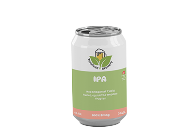

Nyhederne i ZeroBuzz Brew

Sommerens nyhed er en alkoholfri hvedeøl med citron. Den har en sød smag af citrusfrugt, men stadigvæk den friske smag af hvedeøl. Der er mere at læse om den nye Alkoholfri citrus øl ved at trykke på nedenstående
Link Mere

Sommerens anden nye dreng i klassen er vores svar på en alkoholfri IPA. Med smagen af fyldig humle og en subtil eftersmag af eksotiske frugter. Der er mere at læse om vores IPA variant ved at trykke på nedenstående
Læs Mere
Vi i ZeroBuzz Brew mener at der også skal være plads til klassikerne. Derfor har vi naturligvis også en alkohol fri Classic og Pilsner. Der er mere at læse om vores Classic og Pilsner variant ved at trykke på nedenstående.
Læs Mere